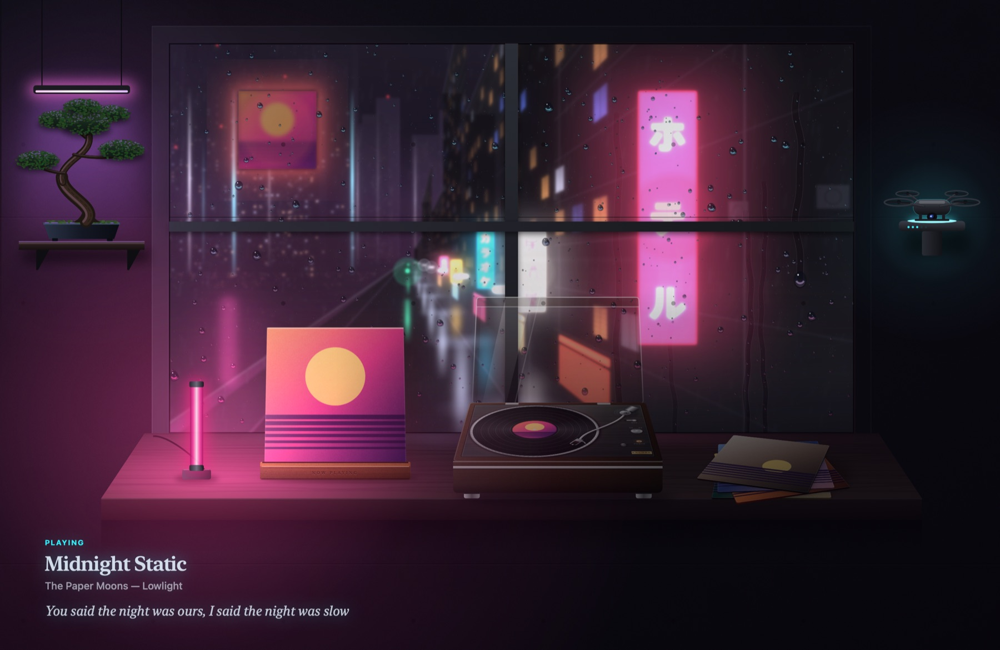
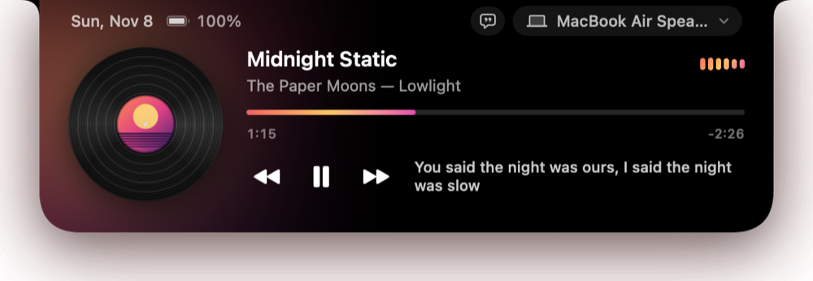
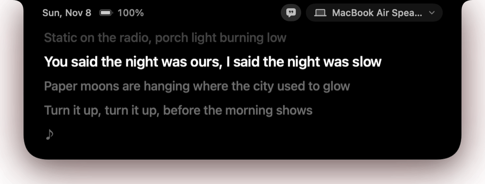
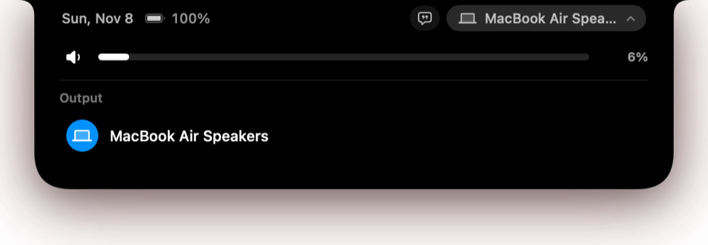
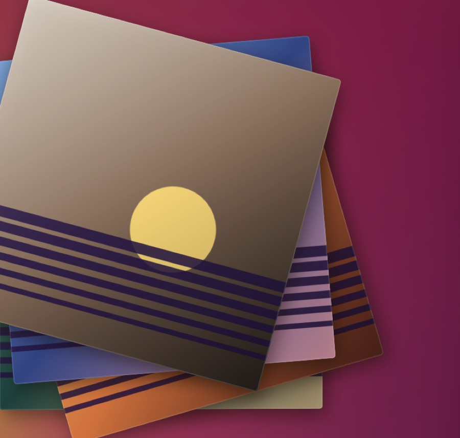
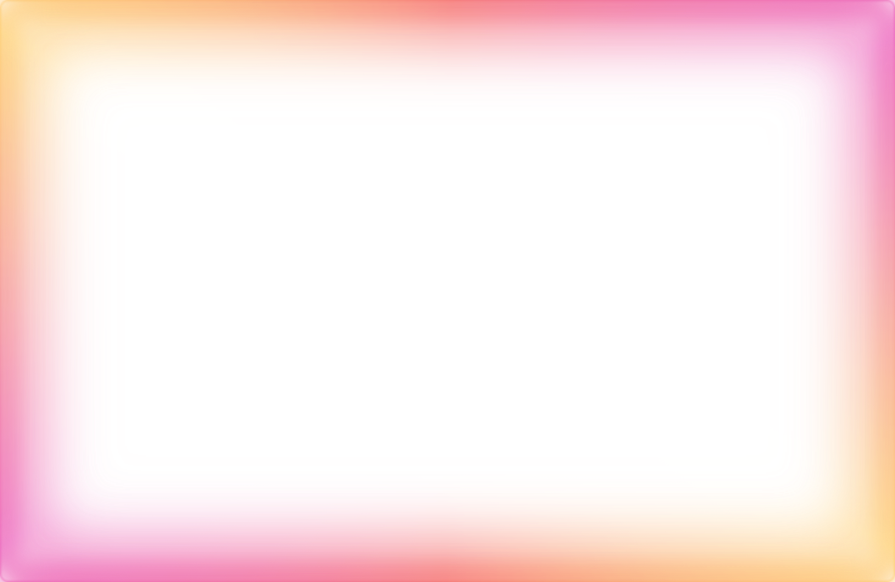

A deck worth looking at
Teak plinth, brushed plate, strobe dots on the platter. The arm swings onto the record when you press play.
Encore turns what's playing in Spotify or Music into a living desktop, a notch island and an album-colored glow.


Each scene puts the album you're playing on display, and its lights move with the beat. Sunroom turns into Lamplight at seven in the evening.


Hover over the notch and it opens into a player: the song, the time left, the line being sung and where the sound is going.


Teak plinth, brushed plate, strobe dots on the platter. The arm swings onto the record when you press play.

Every song you finish leaves its cover on the pile, which clears itself after a few.

A soft rim of light around your display, tinted by the cover and pulsing on the beat.
Synced lyrics follow the song in the island, and the current line can sit on your desktop too. Click any line to jump there.
Encore isn't from the App Store, so macOS stops it on first launch. You only have to allow it once.
Encore then asks to control Spotify or Music, so it can show the song and skip tracks, and to capture audio, so the visuals move with the beat. It listens to what your Mac plays, never the microphone. It lives in the menu bar, not the Dock.